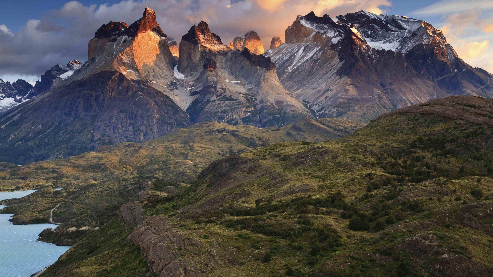
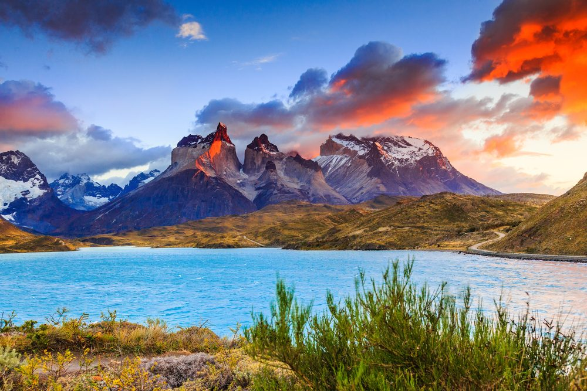
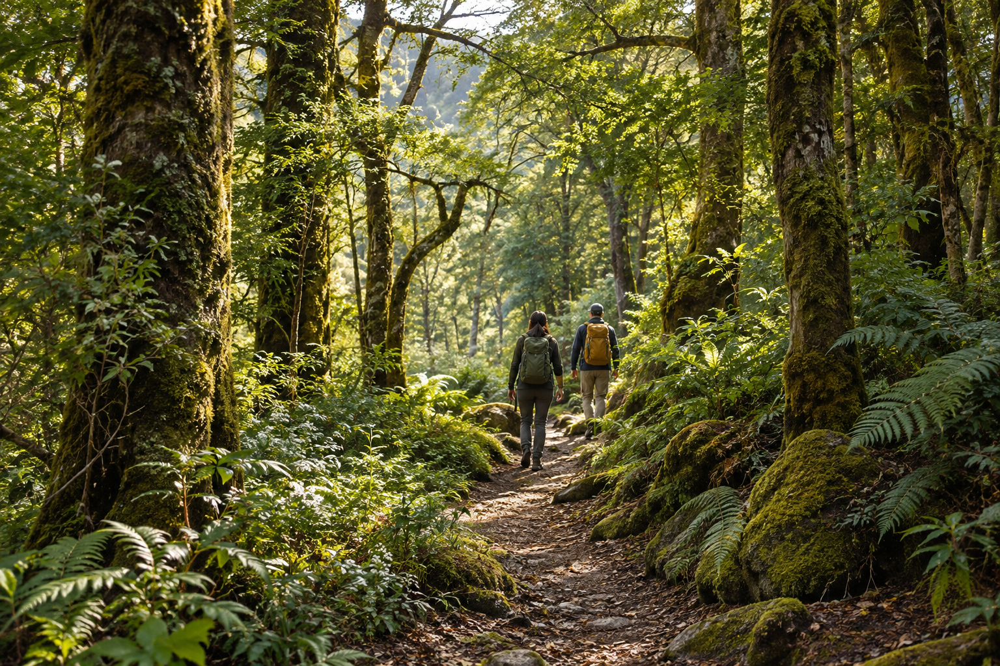

DestacadaTorres del Paine · Magallanes
Circuito Base Torres
Una experiencia de varios días entre montañas, miradores y uno de los paisajes más reconocidos de la Patagonia.
◷ 4 días▲ DifícilDesde $210.000
Cupos sujetos a disponibilidad
Compara dificultad, duración y entorno para elegir una aventura que se ajuste a tu experiencia.

DestacadaTorres del Paine · Magallanes
Una experiencia de varios días entre montañas, miradores y uno de los paisajes más reconocidos de la Patagonia.
Cupos sujetos a disponibilidad

FamiliarCajón del Maipo · Metropolitana
Una alternativa de un día para disfrutar del paisaje cordillerano y una caminata de dificultad accesible.
Cupos sujetos a disponibilidad

NuevaParque Conguillío · Araucanía
Recorre un entorno de bosque nativo y naturaleza volcánica en una salida pensada para quienes ya tienen algo de experiencia.
Cupos sujetos a disponibilidad
No hay rutas disponibles para este filtro.